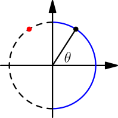
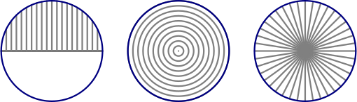

Integration Techniques
Nowadays it's easiest to use sympy for doing difficult integrals, but in this
chapter we'll look into how integrals were done before computers and
calculators. It sounds very boring and hard, but you might find especially
u-substitution kind of amazing.
U Substitution
In the integral chapter we learned that $\int f(x)\ dx$ means the
antiderivatives of $f$. The notation with $dx$'s in it is known as
Leibniz's notation,
and I explained the $\int f(x)\ dx$ like Leibniz did. However, the notation
probably wouldn't be used today if the trick I'm about to show wouldn't make it
really handy.
Let's say that $F$ is an antiderivative of $f$; that is, $F'(x)=f(x)$. In the
integral chapter we turned the chain rule
into an integral rule by integrating both sides:
$$\begin{align}f(g(x))g'(x) &= \frac{d}{dx}F(g(x)) \\
\int f(g(x))g'(x)\ dx &= F(g(x)) + C\end{align}$$
Something interesting happens if we define another variable $u=g(x)$. Then
$\frac{du}{dx}=g'(x)$. You can use whatever variable name you want, but $u$ is
traditionally used here.
$$\begin{align}\int f(u)\frac{du}{dx}\ dx &= F(u) + C\end{align}$$
Could we just cancel out the $dx$'s? It feels kind of wrong because the $dx$
is just a part of our antiderivative notation and not really a variable, but
let's try it and see what happens:
$$\begin{align}\int f(u)\frac{du}{\rcancel{dx}}\rcancel{dx} &\mathop{=}^{\text{wat}} F(u) + C \\
\int f(u)\ du\ &\mathop{=}^{\text{lol}}_{\text{srsly?}}\ F(u) + C\end{align}$$
Amazing, it really worked! $F(u) + C$ is indeed the integral of $f(u)$ with
respect to $u$.
$$\begin{align}\frac{d}{du}(F(u)+C) \mathop{=}^{\text{yes}} F'(u)+0 \mathop{=}_{\text{srsly}} f(u)\end{align}$$
We can get to the same result like this:
$$\begin{align}& \int f(\green{g(x)})\blue{g'(x)\ dx} \qquad\qquad \begin{array}{l} \green u = \green{g(x)} \\
\frac{du}{dx} = g'(x) \\
\blue{du} \overset{\text{lol}}= \blue{g'(x)\ dx} \\
\end{array} \\
=&\ \int f(\green u)\ \blue{du} \\
=&\ F(u) + C \\
=&\ F(g(x)) + C\end{align}$$
<__Myst__> Akuli: that's magic
<Akuli> yes it is :D
<Akuli> well not really
<Akuli> you can kind of understand it if you think of du and dx as
very small changes of u and x
<Akuli> and ∫f(u)du as a sum of f(u) by du area rectangles
<Akuli> that's obviously not a very modern way to define derivatives and
integrals, but it kind of explain-ishs it
When our teacher had shown this trick to us for the first time, everyone were
just amazed by it, and the teacher said that he wanted to take a picture of our
faces.
Example: $\int x\sin(x^2)\ dx$
The derivative of $x^2$ is $2x$ and it differs from $x$ by just a constant,
so a substitution like $u=x^2$ will work.
$$\begin{align}\int x\sin(x^2)\ dx &= \int \sin(\green{x^2})\ \blue{x\ dx} \qquad\qquad \begin{array}{l} \green u = \green{x^2} \\
\frac{du}{dx} = 2x \\
du = 2x\ dx \\
\blue{x\ dx} = \blue{\frac 1 2 du} \\
\end{array} \\
&= \int\sin(\green u)\blue{\frac 1 2 du} \\
&= \frac 1 2 \int\sin(u)\ du \\
&= \frac 1 2 (-\cos(\green u)) + C \\
&= -\frac 1 2 \cos(\green{x^2}) + C\end{align}$$$$\begin{align}\frac{d}{dx}\left(-\frac 1 2 \cos(x^2) + C\right) = -\frac 1 2 (-\sin(x^2)) \cdot 2x + 0 = x\sin(x^2)\end{align}$$
This worked because it's easy to change the integral so that it contains
the derivative of the inside:
$$\begin{align}\int x\sin(x^2)\ dx = \frac 1 2 \int 2x\sin(x^2)\ dx\end{align}$$
Treating $du$ and $dx$ as variables like $du=2x\ dx$ is hand-wavy, but it's
very commonly used and accepted hand-waviness because it works so nicely. In
fact, many people write $\int dx$ when they mean $\int 1\ dx$ and
$\int \frac{dx}{f(x)}$ when they mean $\int \frac{1}{f(x)}\ dx$.
Note that in the above example we added another variable, and switched
everything to use that variable instead of $x$; there must be no $x$ left
over. If there is, try another $u$ choice, do something to the function before
integrating it or maybe try some other integration technique instead of $u$
substitution. When we were done, we went from the $u$ world back to the $x$
world.
Exercise
Here's a true story. At school we had trouble with this integral:
$$\begin{align}\int \frac{\cos(x)}{\sin^2(x)}\ dx\end{align}$$
Our supply teacher came up with a solution, and when I saw it I knew it was
very incorrect, aka WRONG in CAPS AND BOLD. It started like this:
$$\begin{align}\int \frac{\cos(x)}{\sin^2(x)}\ dx = \frac{1}{2\sin(x)}\int\frac{2\sin(x)\cos(x)}{\sin^2(x)}\ dx =\ ...\end{align}$$
Here the supply teacher wanted to have the derivative of $\sin^2(x)$ on the
top. You should know by now that we cannot bring non-constants like
$\frac{1}{2\sin(x)}$ out of integrals. I argued with the teacher about his
solution for the rest of the lesson.
<Zaab1t> and then everyone clapped
<Akuli> well, everyone laughed several times
<Akuli> "this is constant on this interval balblabla" "NO its a
function, not a constant"
The following day our actual teacher thanked me for arguing about it, and
later I found two more fatal mistakes from the solution.
Anyway, integrate $\dfrac{\cos(x)}{\sin^2(x)}$ correctly. It's easy with
the correct substitution. (Note that
$x^{-a} = 1/x^a$.)
Let's see how this works for definite integral; that is, $\int_a^b$ instead of
$\int$, area instead of antiderivative.
$$\begin{align}\int_a^b f(g(x))g'(x)\ dx &= \bigl[F(g(x))\bigr]_{x=a}^{x=b} \\
&= F(\green{g(b)})-F(\green{g(a)}) \\
&= \bigl[F(\green{u})\bigr]_{u=\green{g(a)}}^{u=\green{g(b)}} \\
&= \int_{g(a)}^{g(b)} f(u)\ du\end{align}$$
This means that we just need to change the limits to $u$ values.
Example: $\int_\sqrt{\tau}^\sqrt{2\tau} x\sin(x^2)\ dx$
$$\begin{align}\int_\sqrt{\tau}^\sqrt{2\tau} x\sin(x^2)\ dx &= \int_\sqrt{\tau}^\sqrt{2\tau} \sin(x^2)\ x\ dx \qquad\qquad \begin{array}{l} u = x^2 \\
\text{if }x=\sqrt{\tau}\text{ then }u=\tau \\
\text{if }x=\sqrt{2\tau}\text{ then }u=2\tau \\
du = 2x\ dx \\
x\ dx = \frac 1 2 du \\
\end{array} \\
&= \int_\tau^{2\tau}\sin(u)\frac 1 2 du \\
&= \frac 1 2 \bigl[-\cos(u)\bigr]_{u=\tau}^{u=2\tau} \\
&= \frac 1 2 (-\cos(2\tau)-(-\cos(\tau))) \\
&= \frac 1 2 (\green{\cos(\tau)-\cos(2\tau)})\end{align}$$
$\tau$ and $2\tau$ differ from each other by a full turn, and rotating a
full turn on the unit circle brings us back to where we started and the
cosines are the same.
$$\begin{align}\cos(\tau) &= \cos(2\tau) \\
\green{\cos(\tau)-\cos(2\tau)} &= 0 \\
\int_\sqrt{\tau}^\sqrt{2\tau} x\sin(x^2)\ dx &= 0\end{align}$$
Note that we didn't need to go back to the $x$ world; with definite integrals
it's enough to change the limits, and then we can forget the whole $x$.
Exercise
The parabola $y=(x-1)^2$ rotates around the $x$
axis between $0 \le x \le 2$. Calculate the volume of the shape it forms.

Trig Substitution
Let's say we have an integral like this:
$$\begin{align}\int\sqrt{1-x^2}\ dx\end{align}$$
A substitution like $u=1-x^2$ does not work here because the derivative of the
inside is $-2x$. The $-2$ is not a problem, but we have no extra $x$ in the
integral (and obviously we can't just add an $x$ there).
Here we proved this formula
as an exercise:
$$\begin{align}\sin^2(\theta) + \cos^2(\theta) = 1\end{align}$$
We can solve $\cos^2(\theta) = 1-\sin^2(\theta)$. So, wouldn't it be handy if
we had $x=\sin(\theta)$?
$$\begin{align}\newcommand{abs}[1]{\lvert{#1}\rvert} \\
\sqrt{1-(\sin(\theta))^2} = \sqrt{\cos^2(\theta)} = \abs{\cos(\theta)}\end{align}$$
We can do this with a substitution $\theta = \arcsin(x)$. Here $\arcsin$ is the
inverse of $\sin$, but it always returns values so that
$-\frac \tau 4 \le \theta \le \frac \tau 4$, denoted with blue in this pic:

This is because if we know what $\sin(\theta)$ is, there are multiple values
that $\theta$ could be, like the red dot in the image, but we don't have this
problem on a restricted range like $-\frac \tau 4 \le \theta \le \frac \tau 4$.
Anyway, you can see from the pic that the $x$ coordinates are not negative, so
we have $\cos(\theta) \ge 0$. Let's do the integral
$$\begin{align}&\int\sqrt{1-x^2}\ dx \qquad\qquad \begin{array}{l} \\
\theta=\arcsin(x) \\
x=\sin(\theta) \\
dx = \cos(\theta)\ d\theta \\
\green{\cos(\theta)} \ge 0 \\
\end{array} \\
=&\ \int\sqrt{1-\sin^2(\theta)}\ \cos(\theta)\ d\theta \\
=&\ \int\sqrt{\cos^2(\theta)}\ \cos(\theta)\ d\theta \\
=&\ \int\abs{\green{\cos(\theta)}}\cos(\theta)\ d\theta \\
=&\ \int\cos^2(\theta)\ d\theta\end{align}$$
We still can't use u substitution because we don't have the derivative of
$\cos(\theta)$ anywhere. Let's cheat and use Wikipedia's trig formula
list:
$$\begin{align}\cos^2(\theta) = \frac{1+\cos(2\theta)}{2}\end{align}$$
We'll learn an easy way to prove formulas like this in the Euler formula
chapter.
$$\begin{align}\int\sqrt{1-x^2}\ dx = \int\frac{1+\cos(2\theta)}{2}\ d\theta = \frac 1 2 \int(1+\cos(2\theta))\ d\theta\end{align}$$
Rest of this is quite straight-forward, so I don't see any reason to go through
that.
Here's a handy-dandy table of trig substitutions with a positive constant $a$:
If your integral
contains this... |
...use this sub... |
...and this trig formula... |
...that comes from here |
|---|
| $\sqrt{a-x^2}$ |
$x=\sqrt a \sin(\theta)$ |
$\sin^2(\theta)+\cos^2(\theta)=1$ |
this exercise |
| $\sqrt{a+x^2}$ |
$x=\sqrt a \tan(\theta)$ |
$1+\tan^2(\theta)=\frac{1}{\cos^2(\theta)}$ |
the tan derivative |
Exercise
In the integral chapter I showed you
this pic of different ways to prove the circle area $\pi r^2$:

Prove the circle area formula using the first way, the one with the
stupid vertical slices.